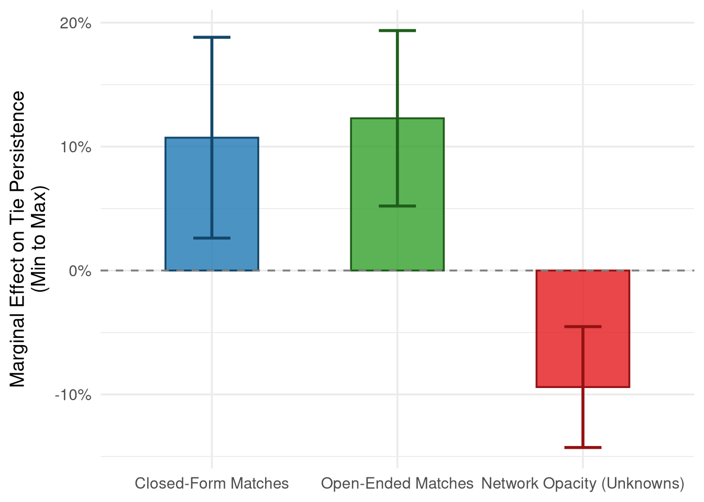

| Model 1: Closed | Model 2: + Open | |
|---|---|---|
| + p < 0.1, * p < 0.05, ** p < 0.01, *** p < 0.001 | ||
| Closed-Form Matches | 1.229*** | 1.177** |
| (0.060) | (0.059) | |
| Open-Ended Matches | 1.320*** | |
| (0.071) | ||
| Tie: Somewhat Close | 0.514*** | 0.564*** |
| (0.070) | (0.078) | |
| Tie: Close | 0.332*** | 0.369*** |
| (0.070) | (0.079) | |
| Tie Duration | 0.990 | 0.991 |
| (0.015) | (0.015) | |
| Ego: Female | 1.075 | 1.049 |
| (0.400) | (0.393) | |
| Alter: Female | 1.400* | 1.293 |
| (0.236) | (0.222) | |
| Ego Female × Alter Female | 0.628+ | 0.709 |
| (0.163) | (0.187) | |
| Tie: Same Dorm / Roommate | 1.273 | 1.270 |
| (0.351) | (0.353) | |
| Tie: Race Homophily | 0.970 | 0.965 |
| (0.191) | (0.191) | |
| Tie: Race Unknown | 0.167*** | 0.169*** |
| (0.031) | (0.031) | |
| Period: Wave 2-5 | 0.050*** | 0.071*** |
| (0.017) | (0.024) | |
| Period: Wave 5-6 | 0.084*** | 0.113*** |
| (0.029) | (0.040) | |
| Intercept | 11.509*** | 4.430** |
| (5.380) | (2.225) | |
| Num.Obs. | 3251 | 3251 |
| AIC | 2557.8 | 2532.4 |
| BIC | 2643.0 | 2623.7 |
| RMSE | 0.32 | 0.32 |
Cultural Matching and the Persistence of Social Ties
Introduction
A central puzzle in the sociology of culture and social networks is the co-evolution of social ties and cultural tastes. Traditional sociological models of taste formation posit that an individual’s cultural profile is largely a product of their current social network configuration. Tastes are assumed to diffuse through existing homophilous ties, which are themselves structured by socio-demographic similarity—“status homophily” ((Lazarsfeld and Merton 1954; McPherson et al. 2001)). Under this view, “birds of a feather flock together,” and due to this mutual flocking, they end up consuming the same cultural goods ((Mark 1998b, 2003)). Tastes are construed as highly malleable, “thin” contents liable to shift whenever the surrounding network ties change.
Yet, longitudinal network research reveals that personal networks are constantly in flux, with ties constantly being added, modified, and deleted ((Burt 2000, 2002; Wellman et al. 1997)). This empirical fact of network volatility raises a major question: if networks are unstable and tastes are merely thin, network-contingent contents, how do we account for the durable, resilient cultural profiles that individuals maintain over time ((Bourdieu 1984; Holt 1998))?
In this paper, we develop and test a cultural matching model of tie persistence. We propose that instead of tastes merely adapting to match pre-existing networks, pre-existing cultural dispositions serve as an active “social glue” that determines which network ties survive and which dissolve. Under this model, dyadic cultural matching (commonalities in tastes and activities) increases the over-time stability and cognitive salience of social ties, net of usual dyadic determinants such as subjective closeness and tie duration.
Using rich longitudinal ego-network data from the NetSense study, we track the persistence of social ties across multiple college-year transitions. To isolate peer dynamics, we restrict our focus to non-kin, on-campus student ties. We unpack this cultural matching mechanism in two ways. First, we establish the baseline protective effect of aggregate cultural matching on tie persistence. Second, we explore the role of “network opacity”—the degree to which an ego lacks knowledge of their alter’s preferences (indicated by “Don’t Know” responses)—as an independent predictor of tie decay.
Theoretical Framework
Cultural Matching and Tie Persistence
A major challenge for any newly formed social relationship is what Burt ((Burt 2000)), drawing on Stinchcombe ((Stinchcombe 1965)), refers to as the “liability of newness.” Newly formed dyadic ties are fragile and exhibit a high baseline hazard of decay (“tie decay”), which steeply declines as a relationship matures and ripens into close friendship. What stabilizes a tie and helps it overcome this liability of newness?
While classic network models emphasize structural factors (such as network constraint or multiplexity) and dyadic factors (such as subjective closeness), we propose that cultural matching serves as a vital stabilizing mechanism. Shared tastes and cultural practices provide a common cognitive and behavioral baseline that facilitates smooth, low-cost social interaction ((Collins 2004; DiMaggio 1987)). When ego and alter share cultural dispositions, they can engage in shared activities and coordinate behavior with minimal friction. Over time, this cultural alignment increases the cognitive salience of the alter, rendering the tie resistant to decay and facilitating its retention in the ego’s active network ((Burt 2000)).
Therefore, we expect that commonalities in cultural tastes and leisure practices will significantly reduce the hazard of tie decay, net of subjective closeness and structural controls (The Baseline Matching Hypothesis).
Network Opacity
Finally, we introduce the concept of network opacity. If shared cultural knowledge stabilizes ties, then a lack of mutual cultural knowledge—network opacity—is a diagnostic signal of relationship precarity. When an ego reports “Don’t Know” regarding an alter’s preferences across multiple cultural domains, this indicates a lack of conversational intimacy and shared experiences, which should independently predict a higher hazard of tie dissolution ((Burt 2002; Wellman et al. 1997)). We test both the main effect of network opacity on tie decay and whether opacity moderates the protective effect of known cultural matches.
Data and Methods
We collected information on the cultural habits of ego-alter pairs using both a series of closed-form domain questions and open-ended activity nominations. For the closed-form items, egos were asked to rate both their own and their alters’ level of interest across six broad cultural and leisure domains: music, movies, books, sports, games, and outdoor activities. For the open-ended items, respondents freely nominated up to five leisure activities they enjoyed, and then indicated whether their alter also engaged in each nominated activity.
Study Waves
The NetSense study is a longitudinal survey of college students collected over multiple waves. For this analysis of tie persistence, we pool data across adjacent waves to construct a person-period dataset. To isolate peer dynamics, we restrict our sample to non-kin, on-campus ties (i.e., alters who are also students at Notre Dame). Specifically, we focus on transitions between: - Wave 1 to Wave 2: Capturing tie dynamics over the first year of college. - Wave 2 to Wave 5: Spanning the middle years of the college experience (approximately a 3-year gap). - Wave 5 to Wave 6: Capturing the transition through the final year and toward graduation.
Measures
Dependent Variable - Tie Persistence: A binary indicator taking a value of 1 if a social tie reported by an ego in a baseline wave (e.g., Wave 1) is still present in the subsequent wave (e.g., Wave 2), and 0 if the tie has dissolved (i.e., the alter is no longer listed in the ego’s network).
Independent Variables - Closed-Form Cultural Matching: A count variable (ranging from 0 to 6) indicating the number of closed-form cultural domains in which the ego and alter share similar tastes or participation levels. The domains assessed include music, movies, books, sports, games, and outdoor activities. - Open-Ended Activity Matching: A count variable (ranging from 0 to 5) capturing the number of shared open-ended activity nominations. - Network Opacity: A count variable (ranging from 0 to 6) measuring the number of cultural domains for which the ego responded “Don’t Know” regarding their alter’s preferences.
Control Variables - Tie Characteristics: We control for the subjective closeness of the relationship (Not Close, Somewhat Close, Close), and the duration of the tie. - Demographics: Ego and alter gender (Female / Male) and their interaction to account for homophily. - Network Structure: Variables capturing properties of the ego’s broader network, including the proportion of kin (kinnet), the proportion of friends (friendnet), and the mean closeness of the network (meanclose). - Time Period: Dummy variables for the specific wave intervals (Wave 1-2, Wave 2-5, Wave 5-6) to account for differing baseline rates of tie dissolution over different time gaps.
Methodological Approach and Modeling Strategy
We adopt a unified Discrete-Time Survival Analysis (event history modeling) approach. To accomplish this, we structured the longitudinal network data into a person-period format, pooling all adjacent wave transitions (Wave 1 to 2, Wave 2 to 5, and Wave 5 to 6) into a single dataset. We model the probability of tie persistence (vs. dissolution) as a function of cultural matching and network opacity using mixed-effects logistic regression (lme4::glmer in R).
This updated modeling strategy introduces several key improvements: 1. Simultaneous Estimation: By modeling all waves simultaneously, we gain statistical power and provide a generalized estimate of tie persistence over the entire study period. 2. Baseline Hazard Modeling: We include fixed effects for the specific wave periods (period) to flexibly control for the baseline hazard of tie dissolution, acknowledging that tie decay rates differ between the 1-year (Wave 1-2, Wave 5-6) and 3-year (Wave 2-5) intervals. 3. Accounting for Clustering: We include a random intercept for each ego (1 | egoid) to account for the unobserved heterogeneity and non-independence of multiple alter ties nested within the same ego. 4. Predictive Margins: To facilitate interpretation of the logistic regression coefficients, we use the marginaleffects package to compute and visualize predicted probabilities of tie persistence across the range of our variables of interest.
Results
Baseline Models: Overall Cultural Matching
Our initial models assess the effect of cultural matching on tie persistence. Model 1 includes only closed-form cultural matches. Model 2 adds the count of shared open-ended activities to test whether these actively recalled commonalities provide additional explanatory power. The table below presents the odds ratios for these baseline models.
The baseline models demonstrate a robust, positive relationship between cultural matching and tie persistence among non-kin, on-campus peers. In Model 1, each additional closed-form match significantly increases the odds of a tie persisting. When we introduce open-ended matches in Model 2, both variables independently predict tie persistence, demonstrating the value of incorporating both open and closed-form items.
Network Opacity
Finally, we explore the role of “network opacity”—the degree to which an ego lacks knowledge of their alter’s cultural tastes, measured by the number of “Don’t Know” responses. We test both the main effect of opacity and its interaction with cultural matching.
| Opacity Main Effects | Closed Interaction | Open Interaction | Both Interactions | |
|---|---|---|---|---|
| + p < 0.1, * p < 0.05, ** p < 0.01, *** p < 0.001 | ||||
| Closed-Form Matches | 1.091 | 1.095 | 1.092 | 1.096+ |
| (0.058) | (0.060) | (0.058) | (0.061) | |
| Open-Ended Matches | 1.291*** | 1.291*** | 1.285*** | 1.283*** |
| (0.070) | (0.070) | (0.076) | (0.077) | |
| Network Opacity (Unknowns) | 0.771*** | 0.777*** | 0.761** | 0.766** |
| (0.045) | (0.051) | (0.065) | (0.067) | |
| Closed-Form × Opacity | 0.989 | 0.987 | ||
| (0.043) | (0.044) | |||
| Open-Ended × Opacity | 1.007 | |||
| (0.037) | ||||
| Tie: Somewhat Close | 0.590*** | 0.591*** | 0.590*** | 0.591*** |
| (0.082) | (0.082) | (0.082) | (0.082) | |
| Tie: Close | 0.453*** | 0.453*** | 0.452*** | 0.452*** |
| (0.099) | (0.100) | (0.099) | (0.099) | |
| Tie Duration | 0.982 | 0.982 | 0.982 | 0.982 |
| (0.016) | (0.016) | (0.016) | (0.016) | |
| Ego: Female | 1.035 | 1.036 | 1.033 | 1.034 |
| (0.394) | (0.395) | (0.394) | (0.394) | |
| Alter: Female | 1.241 | 1.241 | 1.240 | 1.241 |
| (0.215) | (0.215) | (0.215) | (0.215) | |
| Ego Female × Alter Female | 0.737 | 0.739 | 0.738 | 0.740 |
| (0.196) | (0.197) | (0.196) | (0.197) | |
| Tie: Same Dorm / Roommate | 1.223 | 1.221 | 1.223 | 1.221 |
| (0.344) | (0.344) | (0.344) | (0.344) | |
| Tie: Race Homophily | 0.920 | 0.920 | 0.917 | 0.916 |
| (0.184) | (0.184) | (0.184) | (0.184) | |
| Tie: Race Unknown | 0.159*** | 0.159*** | 0.158*** | 0.158*** |
| (0.030) | (0.030) | (0.030) | (0.030) | |
| Period: Wave 2-5 | 0.062*** | 0.061*** | 0.061*** | 0.061*** |
| (0.021) | (0.021) | (0.021) | (0.021) | |
| Period: Wave 5-6 | 0.090*** | 0.090*** | 0.090*** | 0.090*** |
| (0.032) | (0.032) | (0.032) | (0.032) | |
| Intercept | 8.084*** | 8.070*** | 8.185*** | 8.195*** |
| (4.250) | (4.244) | (4.333) | (4.340) | |
| Num.Obs. | 3251 | 3251 | 3251 | 3251 |
| AIC | 2513.5 | 2515.4 | 2515.4 | 2517.3 |
| BIC | 2610.8 | 2618.9 | 2618.9 | 2626.9 |
| RMSE | 0.32 | 0.32 | 0.32 | 0.32 |
In our final models, we assessed the role of network opacity—the degree to which an ego lacks knowledge of their alter’s cultural tastes, operationalized as the number of “Don’t Know” responses across the six cultural domains.
The Opacity Main Effects model reveals that network opacity is a significant and independent predictor of tie dissolution. This suggests that a lack of shared cultural knowledge signals a weaker or more precarious tie, independent of the actual cultural similarities they do share.
When testing for interactions in non-linear models such as logistic regression, simply examining the multiplicative interaction coefficients can be misleading. Following the recommendations of Mize (2019), we formally tested the interactions by calculating the second differences in predicted probabilities (Average Marginal Effects). We computed how the effect of moving from the minimum to the maximum number of matches changes as network opacity goes from its minimum (0) to maximum (6) value.
Consistent with the non-significant interaction coefficients in the Closed Interaction and Open Interaction models, the second differences in predicted probabilities are also not statistically significant. The marginal effect of closed-form matches only increases by 0.015 (\(p = 0.921\)) when network opacity is at its maximum compared to its minimum, and the effect of open-ended matches only increases by 0.102 (\(p = 0.345\)). This indicates that the protective effect of known cultural matches remains relatively stable regardless of how much else the ego doesn’t know about the alter. As visualized below, higher network opacity uniformly lowers the baseline probability of tie persistence.
To compare these competing dynamics, Figure Figure 1 visualizes the marginal effect (calculated as the change from the minimum to the maximum value) of closed-form matches, open-ended matches, and network opacity on the predicted probability of tie persistence.

Model Fit and Comparison
To evaluate the relative performance of our different model specifications, we present a comparative summary of the fit statistics for all models in Table 3.
| Model | N Obs | Log Likelihood | AIC | BIC |
|---|---|---|---|---|
| Model 1: Closed | 3251 | -1264.91 | 2557.82 | 2643.03 |
| Model 2: + Open | 3251 | -1251.21 | 2532.42 | 2623.72 |
| Model 3: + Opacity | 3251 | -1240.73 | 2513.46 | 2610.84 |
| Model 4: Closed Int | 3251 | -1240.70 | 2515.40 | 2618.87 |
| Model 5: Open Int | 3251 | -1240.70 | 2515.40 | 2618.88 |
| Model 6: Both Int | 3251 | -1240.66 | 2517.32 | 2626.88 |
The fit statistics reveal several important patterns: - Open-ended matches add value: The addition of open-ended matches in Model 2 significantly improves the model fit (lower AIC and BIC) over Model 1. - Opacity is critical: Model 3 (Opacity Main Effects) significantly improves model fit over the models including only cultural matches. - No support for opacity interactions: The opacity interaction models (Models 4, 5, and 6) do not statistically improve model fit over Model 3, indicating that the effects of cultural matching and network opacity are relatively stable and additive.
Conclusion
This analysis updates previous Stata-based workflows to a modern R approach, providing robust evidence for the role of closed-form and open-ended cultural matching, as well as network opacity, in the persistence of non-kin peer ties over time.
References
Borgatti, Stephen P. 2005. “Centrality and Network Flow.” Social Networks 27 (1): 55–71.
Bourdieu, Pierre. 1984. Distinction: A Social Critique of the Judgement of Taste. Translated by Richard Nice. Harvard University Press.
Bourdieu, Pierre. 1990. The Logic of Practice. Polity Press.
Bourdieu, Pierre. 2000. Pascalian Meditations. Stanford University Press.
Burt, Ronald S. 2000. “Decay Functions.” Social Networks 22 (1): 1–28.
Burt, Ronald S. 2002. “Bridge Decay.” Social Networks 24 (4): 333–63.
Carley, Kathleen M. 1991. “A Theory of Group Stability.” American Sociological Review 56 (3): 331–54.
Collins, Randall. 2004. Interaction Ritual Chains. Princeton University Press.
DiMaggio, Paul. 1987. “Classification in Art.” American Sociological Review 52 (4): 440–55.
Erickson, Bonnie H. 1988. “The Relational Basis of Attitudes.” In Social Structures: A Network Approach, edited by Barry Wellman and S. D. Berkowitz. Cambridge University Press.
Erickson, Bonnie H. 1996. “Culture, Class, and Connections.” American Journal of Sociology 102 (1): 217–52.
Holt, Douglas B. 1997. “Distinction in America? Recovering Bourdieu’s Theory of Tastes from Its Critics.” Poetics 25 (2): 93–120.
Holt, Douglas B. 1998. “Does Cultural Capital Structure American Consumption?” Journal of Consumer Research 25 (1): 1–25.
Lazarsfeld, Paul F., and Robert K. Merton. 1954. “Friendship as a Social Process: A Substantive and Methodological Analysis.” In Freedom and Control in Modern Society, edited by Morroe Berger, Theodore Abel, and Charles Page. Van Nostrand.
Lizardo, Omar. 2006. “How Cultural Tastes Shape Personal Networks.” American Sociological Review 71 (5): 778–807.
Mark, Noah P. 1998a. “Beyond Individual Differences: Social Differentiation from First Principles.” American Sociological Review 63 (3): 309–30.
Mark, Noah P. 1998b. “Birds of a Feather Sing Together.” Social Forces 77 (2): 453–85.
Mark, Noah P. 2003. “Culture and Competition: Homophily and Distancing Explanations for Cultural Niches.” American Sociological Review 68 (3): 319–45.
McPherson, Miller, Lynn Smith-Lovin, and James M. Cook. 2001. “Birds of a Feather: Homophily in Social Networks.” Annual Review of Sociology 27 (1): 415–44.
Mize, Trenton D. 2019. “Best Practices for Estimating, Interpreting, and Presenting Nonlinear Interaction Effects.” Sociological Science 6: 81–117.
Morgan, David L., Margaret B. Neal, and Paula Carder. 1997. “The Stability of Core and Peripheral Networks over Time.” Social Networks 19 (1): 9–25.
Stinchcombe, Arthur L. 1965. “Social Structure and Organizations.” In Handbook of Organizations, edited by James G. March. Rand McNally.
Suitor, J. Jill, Barry Wellman, and David L. Morgan. 1997. “It’s about Time: How, Why, and When Networks Change.” Social Networks 19 (1): 1–7.
Wellman, Barry, Renita Yuk-Lin Wong, David Tindall, and Nancy Nazer. 1997. “A Decade of Network Change: Turnover, Persistence and Stability in Personal Communities.” Social Networks 19 (1): 27–50.
Werner, Carol, and Pat Parmelee. 1979. “Similarity of Leisure Activities and Friendship Selection.” Personality and Social Psychology Bulletin 5 (2): 240–42.